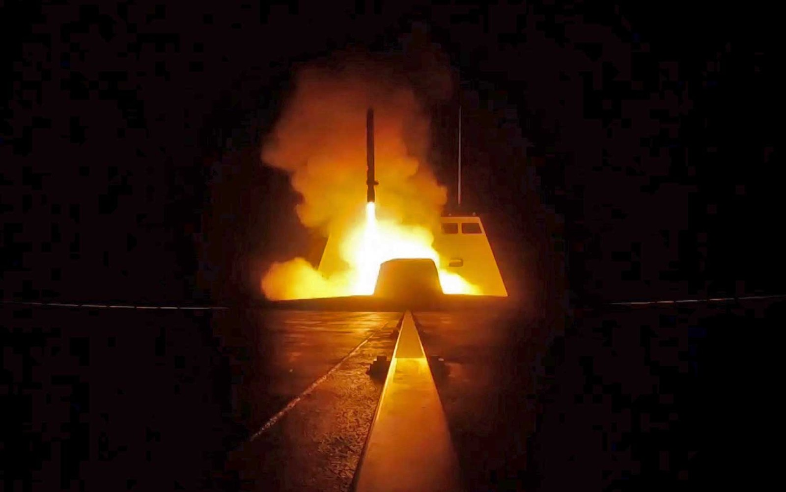
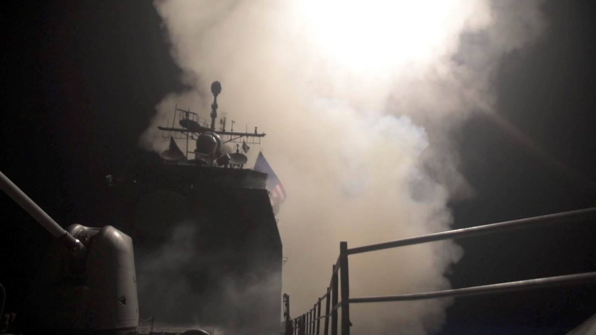
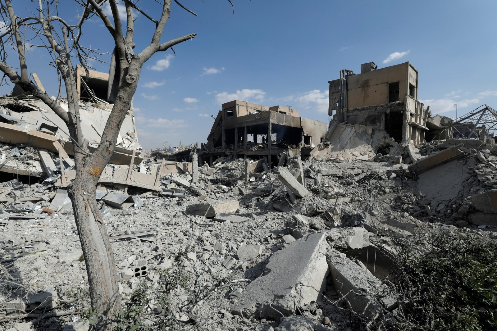

105 mísseis e 3 alvos: veja como foi o ataque, as armas utilizadas e quais foram os alvos na Síria

O bombardeio de Estados Unidos, França e Reino Unido a alvos supostamente relacionados a armas químicas na Síria começou por volta das 4h da madrugada na Síria (22h de sexta-feira em Brasília), no momento em que o presidente norte-americano Donald Trump anunciava a ação.
A Rússia chegou a afirmar que a defesa antiaérea síria interceptou 71 mísseis, no entanto, o Departamento de Defesa dos EUA disse que nenhum dos 105 mísseis disparados sofreu interferência.
Os alvos
Centro de pesquisa e desenvolvimento Barzah
- Localização: na região da grande Damasco
- Suspeita de produção e testes de tecnologia química e biológico
- Armas: 76 mísseis (57 Tomahawk e 19 ar-terra)
Armazém em Him Shinshar
- Localização: perto de Homs
- Suposto depósito de gás sarin e equipamentos de produção
- Armas: 22 mísseis (9 Tomahawk, 8 Storm Shadow, 5 SCALP)
- Localização: Homs
- Suposto depósito de armas químicas e posto de comando
- Armas: 7 mísseis SCALP
De onde saíram os mísseis?

Navios no Mar Vermelho
- Cruiser USS Monterey - 30 mísseis Tomahawk
- Destroyer USS Laboon - 7 mísseis Tomahawk
- Destroyer Higgins - 23 mísseis Tomahawk

Navios no Mediterrâneo
- Fragata francesa - 3 mísseis SCALP
- Submarino John Warner (EUA) - 6 mísseis Tomahawk
Pelo ar
- Bombardeiros B1 Lancer (EUA) - 19 mísseis ar-terra
- Tornados e Typhoons (Reino Unido) - 8 mísseis Storm Shadow
- Rafales e Mirages (França) - 9 mísseis SCALP
